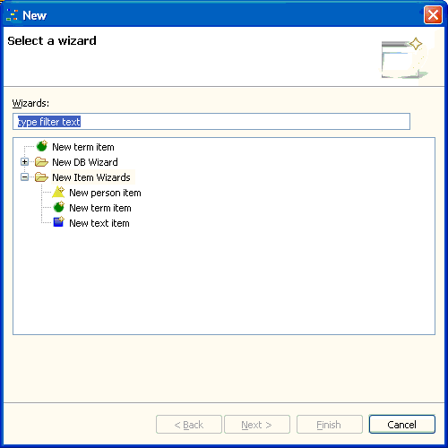

The Relations application provides three wizards to create items, one for each item type. In addition, there is a wizard to create a new Relations database.
The New... wizard is part of the Data menu. You get
the same choice entering Ctrl+N.

The application's New... wizards.
A shortcut for item creation is clicking one of the three New ITEMTYPE item action buttons in the toolbar. This is equivalent with starting the New... wizard and selecting one of the New Item Wizards.
Selecting one of the item wizards will open the dialog window where you can enter the information needed to create the item. As soon as you have entered enough information, you can either finish the wizard or proceed to the next page. Both actions will effectively create the item. If you proceed to the next page, however, you have to possibility to create the new item's initial context by adding the appropriate relations from the set of existing items.
The application comes with an embedded database out of the box. You may want to create new databases (or, to put it correct, new database tables), e.g. for testing purpose or to hold the data in an external database you have already installed on your system (e.g. MySQL). To do this, you start the New Relations database wizard.
Wizard to create a new database catalog
First, you have to select the database hosting the catalog where you want to create the tables needed by the application. You can choose the embedded database provided by the application or an external database the application can connect to (e.g. MySQL).
If you chose the embedded database, the only thing you have to do is to enter the name of the new catalog. You can enter any character except for spaces and special characters.
If you chose an external database, you have to provide the information needed to connect to this database. You have to specify where the RDBMS (relational database management system) is installed (the host), the name of the database (i.e. the catalog) that is set up to store the information within this RDBMS, the user name and password that has the right to access the information stored in this catalog. Of course, the catalog has to exist already on the specified database for that you can provide the information and for that the application can connect to this database.
After entering the necessary information and clicking the Finish button, the tables in the specified database will be created and activated. You will notice the new database's name in the application's status line. The Relations browser will be empty as well as the selection views and the inspector view.